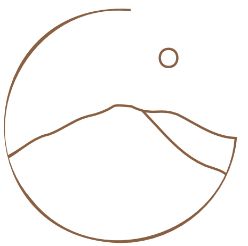
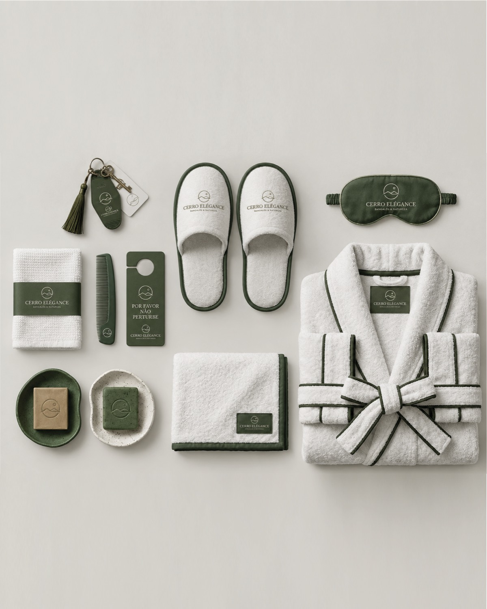
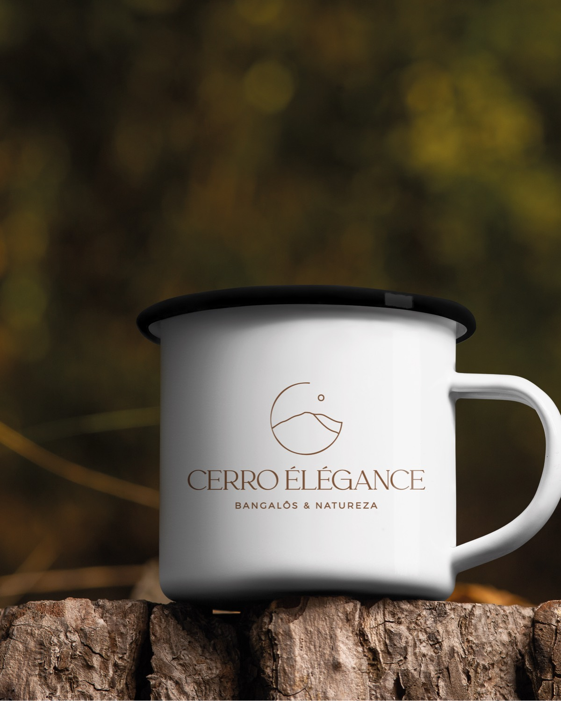
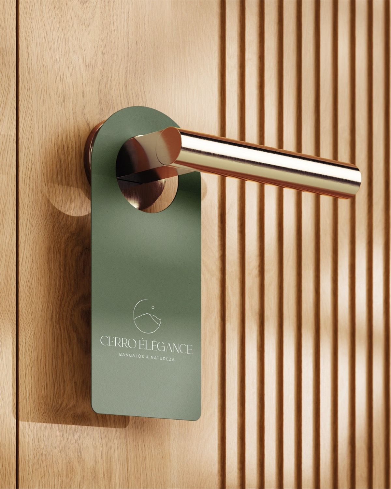
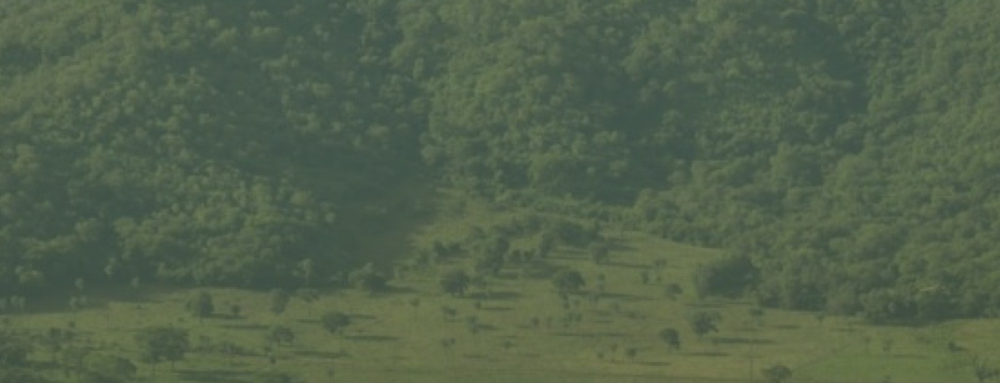
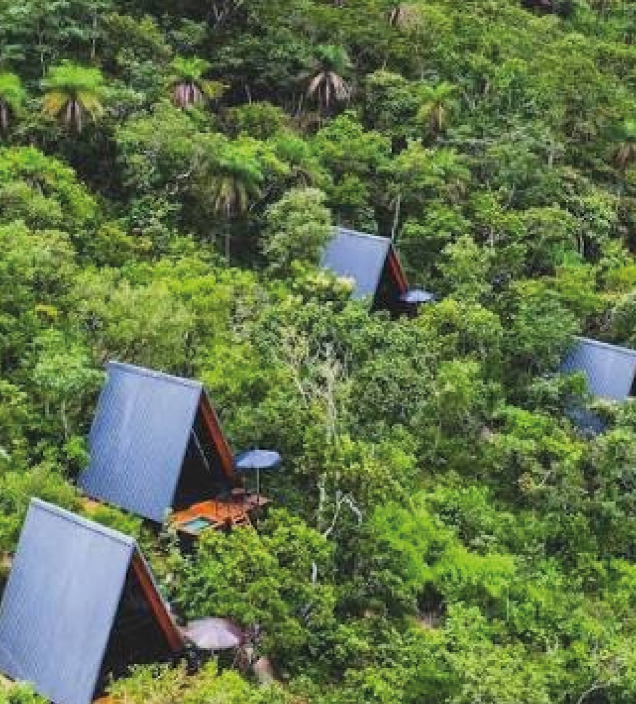
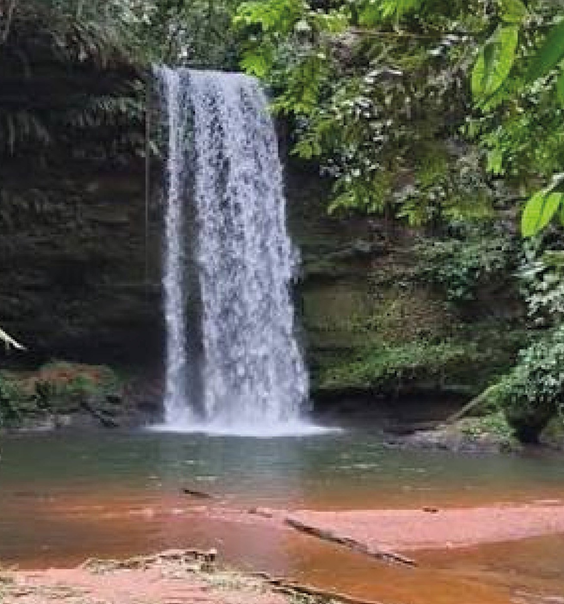
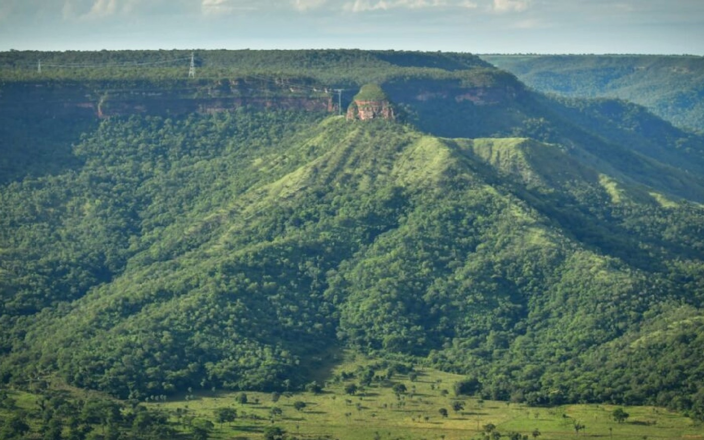
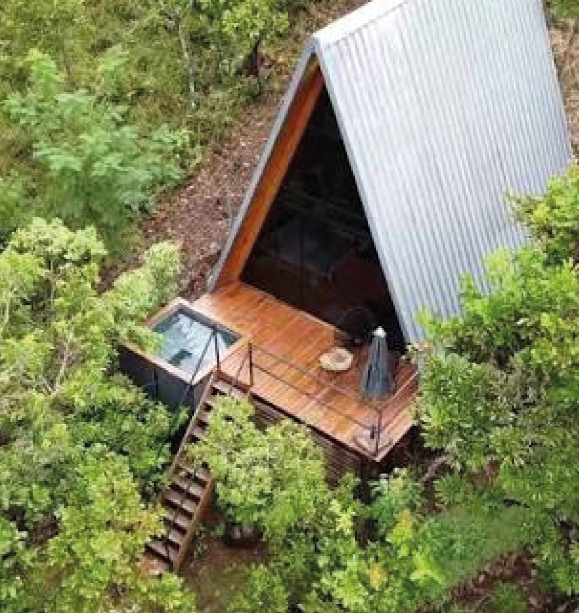

Serra de Taquaruçu · TO
Bangalôs privativos em meio à mata, com ofurô no deck e a Serra de Taquaruçu inteira como vista.
Reserve o seu refúgio
É o tempo da natureza que sobe do vale antes do café. Da água que corre sem pressa entre as pedras. Da chuva com cheiro de natureza. Da luz que muda de cor no fim da tarde e ninguém precisa fotografar para lembrar.
O Cerro Élégance nasceu para devolver esse tempo a você. Poucos bangalôs, desenhados para que a única coisa entre você e a paisagem seja uma janela.
Aqui, natureza não é cenário.
É o motivo.
O bangalô
Cada bangalô é uma casa só sua: telhado alto em forma de A, paredes de vidro voltadas para o verde e um deck suspenso sobre a mata. Por dentro, linhas limpas, madeira, linho e tons de terra. Nada que dispute atenção com a vista.
Água quente ao ar livre, sob as copas e sob as estrelas.
Bangalôs afastados entre si. Ninguém na sua vista, ninguém no seu silêncio.
Enxoval de algodão e blackout para dormir até quando quiser.
A janela que inspira o nosso símbolo, agora emoldurando o seu amanhecer.
Ar-condicionado, cozinha/frigobar, cafeteira, Wi-Fi, lareira externa.
Poucas unidades, de propósito. Exclusividade não é discurso; é uma conta.
Você chega para dormir na serra.
Vai embora querendo morar nela.
Os detalhes
Do roupão de algodão à caneca esmaltada do café no deck, cada peça do Cerro Élégance foi pensada para o seu ritual de chegada. Amenities exclusivos com aromas inspirados no Cerrado, toalhas bordadas, chinelos e máscara de dormir para quem decidir que hoje o despertador é o sol.



Um dia no Cerro
6h30

A neblina ainda está no vale. Você assiste da cama.
7h

Sem horário, sem fila, sem pressa.
11h

As cachoeiras da serra estão a minutos.
17h30

A serra fica cor de cobre. O melhor lugar para ver é o seu deck.
21h

Longe da cidade, o céu volta a ser céu.
O lugar
A Serra de Taquaruçu é o lado serrano de Palmas: mais de 80 cachoeiras catalogadas, mirantes, trilhas, água fria e um clima mais ameno que o da capital. Um destino que muita gente ainda não conhece — e que nós escolhemos justamente por isso.
Você sai de Palmas e, meia hora depois, está em outro ritmo. Sem voo, sem conexão, sem perder o primeiro dia de folga na estrada.
Palmas
~30 min
do centro de Palmas
Taquaruçu
80+
cachoeiras na região
Cerro Élégance
3
bangalôs, apenas
A porta de entrada do Jalapão merece uma pausa à altura. Comece ou termine sua expedição na serra.
10 de janeiro de 2027
Estamos preparando cada detalhe para abrir as portas em 15 de janeiro de 2027. Quem entrar na lista de fundadores recebe acesso antecipado ao calendário, antes da abertura ao público, e uma condição exclusiva na primeira estadia.